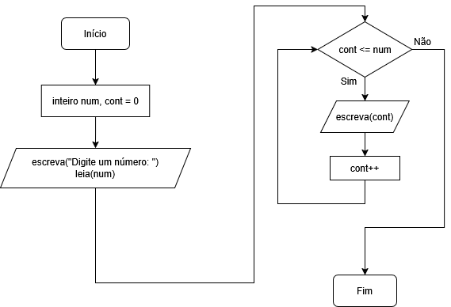
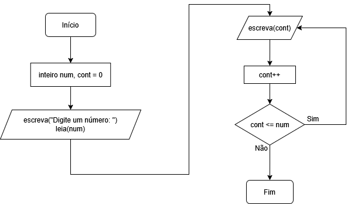
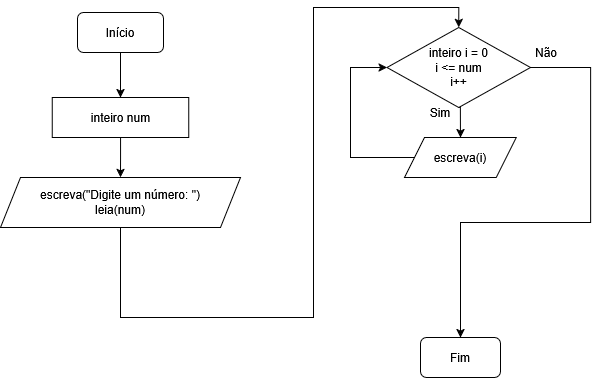

Existem três tipos de laços de repetição, basicamente. As estruturas de repetição servem para repetir instruções no código automaticamente. Elas usam uma condição lógica (verdadeiro ou falso) e continuam repetindo enquanto essa condição for verdadeira. Isso é útil para repetir cálculos, mostrar listas de números, pedir dados várias vezes, etc.
O enquanto é um laço que repete enquanto a condição for verdadeira. A condição é verificada antes de executar o bloco. Use quando não sabemos quantas vezes vai repetir.
Veja um exemplo simples:
programa {
funcao inicio() {
inteiro num, cont = 0 // Atribui 0 a num e a cont
escreva("Digite um número: ")
leia(num)
enquanto(cont <= num) {
escreva(cont, "\n")
cont++
}
}
}
Veja o fluxograma desse código:

É parecido com o enquanto, mas no faca enquanto o bloco é executado pelo menos uma vez, pois a condição só é verificada depois. Use quando queremos garantir que o código dentro do laço rode ao menos uma vez.
Veja um exemplo:
programa {
funcao inicio() {
inteiro num, cont = 0 // Atribui 0 a num e a cont
escreva("Digite um número: ")
leia(num)
faca {
escreva(cont, "\n")
cont++
}
enquanto(cont <= num)
}
}
No código acima, mesmo que digitemos um número negativo (que geraria a condição falsa), o laço é executado uma vez porque isso é verificado depois da execução do mesmo.
Veja o fluxograma do código acima:

O para é um laço com controle automático, ideal para quando sabemos exatamente quantas vezes queremos repetir. Tem três partes divididas por ponto-e-vírgula: Início, condição, passo.
Veja um exemplo de uso:
programa {
funcao inicio() {
inteiro num
escreva("Digite um número: ")
leia(num)
para(inteiro i = 0; i <= num; i++) { // Dividido em três partes por ponto-e-vírgula: Início, condição e passo.
escreva(i, "\n")
}
}
}
Veja o fluxograma desse código:

Geralmente, todo para pode ser substituído por um enquanto, mas o contrário nem sempre é possível.
PS: Tome muito cuidado com laços infinitos, pois podem fazer uma execução no programa que nunca vai terminar, e pode travar seu programa.
Em laços de repetição, principalmente os infinitos, podemos encontrar o pare e o continue
, que funcionam assim:
continue: Pula para a próxima repetição do laço. Ou seja, ignora o restante do código dentro do laço e volta para o início do loop.
pare: Interrompe o laço. Sai completamente do loop, como se ele tivesse terminado.No entanto, o continue
não existe por padrão no Portugol Studio, mas a maioria das linguagens o têm. Cada pare e continue
só funciona dentro do laço correspondente.
Veja um exemplo de um enquanto infinito, mas que é controlado e tem uma condição de parada com pare:
programa {
funcao inicio() {
inteiro num, cont = 0
escreva("Digite um número: ")
leia(num)
enquanto(verdadeiro) { // Laço infinito
cont++
se(cont > num) { // Entra na condição e interrompe o laço com pare
pare
}
// Outro se, independente
se(cont % 2 == 0) { // Simulando o continue que não existe no Portugol Studio, para escrever só os pares
escreva(cont, "\n")
}
}
}
}
Um array (também chamado de vetor quando é unidimensional) é uma variável composta, é como uma caixinha que guarda várias informações do mesmo tipo usando um único nome. Em vez de criar várias variáveis separadas, você cria uma variável que armazena várias posições. Cada posição de um vetor é chamado de índice e é contado a partir do 0.
Veja um exemplo simples de uso de um vetor:
programa {
funcao inicio() {
caracter vogais[5]
vogais[0] = 'A'
vogais[1] = 'E'
vogais[2] = 'I'
vogais[3] = 'O'
vogais[4] = 'U'
escreva(vogais[0], "\n")
escreva(vogais[1], "\n")
escreva(vogais[2], "\n")
escreva(vogais[3], "\n")
escreva(vogais[4], "\n")
}
}
Inclusive, podemos, de forma mais inteligente, usar um laço para pra que não precise repetir código (aí vemos a utilidade dos laços de repetição):
programa {
funcao inicio() {
caracter vogais[5]
vogais[0] = 'A'
vogais[1] = 'E'
vogais[2] = 'I'
vogais[3] = 'O'
vogais[4] = 'U'
para(inteiro i = 0; i < 5; i++) {
escreva(vogais[i], "\n")
}
}
}
No caso acima, nós declaramos a variável composta com 5 posições, e preenchemos cada uma das posições com um valor único, e depois exibimos cada uma dessas posições.
Em algumas linguagens, principalmente as dinamicamente tipadas, como o Javascript, PHP e Python, permitem misturar tipos dentro de um mesmo array (ou listas, no caso do Python), como por exemplo, isso em Javascript:
var pessoa = ["Fulano", 15, true];
for(let i = 0; i < 3; i++) {
document.write(`${pessoa[i]}<br/>`);
}
No entanto, algo como o código acima não é possível em linguagens estaticamente tipadas, como o C, C++, Java e C#, além do próprio Portugol, pois estas exigem a tipagem do array como uma só (tudo é inteiro, ou tudo é caracter, etc.).
Algumas linguagens, como o PHP, permitem usar arrays associativos, onde podemos atribuir nomes literais ao invés de índices numéricos. O equivalente em Python seriam os dicionários.
Veja um exemplo de array com inteiros e com o algoritmo Bubblesort para a ordenação dos dados em ordem crescente:
programa {
funcao inicio() {
const inteiro TAM = 7
inteiro dezenas[TAM]
inteiro i, aux, cont
dezenas[0] = 20
dezenas[1] = 50
dezenas[2] = 10
dezenas[3] = 40
dezenas[4] = 70
dezenas[5] = 30
dezenas[6] = 60
escreva("Array na ordem original:\n\n")
para(i = 0; i < TAM; i++) {
escreva(dezenas[i], "\n")
}
// Ordenando array com modo "bubblesort":
para(cont = 1; cont < TAM; cont++) {
para(i = 0; i < TAM - 1; i++) {
se(dezenas[i] > dezenas[i + 1]) {
aux = dezenas[i]
dezenas[i] = dezenas[i + 1]
dezenas[i + 1] = aux
}
}
}
escreva("\nArray ordenado:\n\n")
para(i = 0; i < TAM; i++) {
escreva(dezenas[i], "\n")
}
}
}
PS: Note que temos dois laços para aninhados. Quando você tem um para dentro de outro para, o funcionamento acontece assim:
Temos também os arrays bidimensionais, conhecidos também como matrizes. Matrizes são como tabelas dentro do seu programa. Enquanto um vetor tem apenas uma linha de valores, a matriz possui linhas e colunas.
Podemos utilizar matrizes para organizar dados em formato de tabela, como notas de alunos, horários, etc.
Veja um exemplo de matriz com números, onde os pares ficam em uma linha, e os ímpares em outra linha, além dos para aninhados para exibir os mesmos:
programa {
funcao inicio() {
inteiro numeros[2][5]
// Linha 0
numeros[0][0] = 0
numeros[0][1] = 2
numeros[0][2] = 4
numeros[0][3] = 6
numeros[0][4] = 8
// Linha 1
numeros[1][0] = 1
numeros[1][1] = 3
numeros[1][2] = 5
numeros[1][3] = 7
numeros[1][4] = 9
para(inteiro l = 0; l < 2; l++) { // Linhas
para(inteiro c = 0; c < 5; c++) { // Colunas
escreva(numeros[l][c], " ") // Não pula linha, só dá espaço
}
escreva("\n") // Pula de linha, executado após o para interno terminar o laço dele
}
}
}
Aí, ele exibirá como em uma tabela mesmo.
No caso das matrizes, o primeiro número representa a linha, e o segundo a coluna.